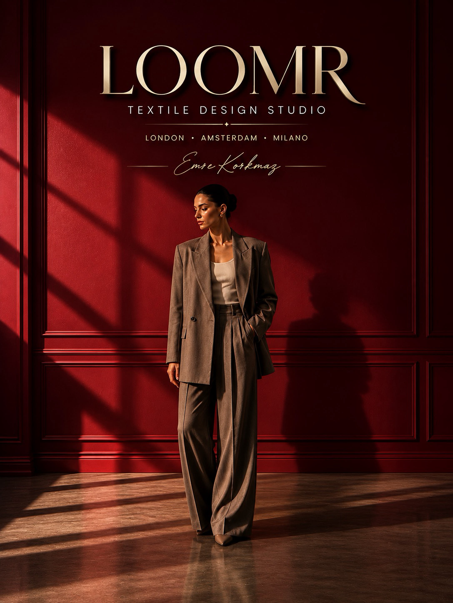

02 — 3D Stüdyo
Tasarla.
Giydir.
Föyle.
Şablonu seç, gerçek zamanlı döndür, kütüphaneden kumaş ve renk uygula. Hazır olduğunda tek tıkla teknik föyünü oluştur ve modeliste gönder.
Stüdyoyu aç →
Koleksiyonunu ilk eskizden mağaza rafına kadar tasarla, geliştir, tedarik et ve üret — tek platformda.
LOOMR bir moda markasının tüm yaşam döngüsünü tek sistemde birleştirir — bir stüdyonun tasarım zekâsı, bir ERP'nin yapısı, bir pazaryerinin keşif gücü ve modern bir çalışma alanının iş birliğiyle.
Garment seç, döndür, kumaş & renk uygula, teknik föy oluştur.
Kumaş kütüphanesi — GSM, sertifika, Pantone, canlı stok, numune.
Parametreleri seç — LOOMR koleksiyonun tamamını hazırlasın.
Kalıptan sevkiyata dokuz aşamalı canlı üretim takibi.
Lookbook, editorial, kampanya — tüm arşiv tek yerde.
Tasarım, föy, koleksiyon ve numunelerin canlı grafiklerle.
Şablonu seç, gerçek zamanlı döndür, kütüphaneden kumaş ve renk uygula. Hazır olduğunda tek tıkla teknik föyünü oluştur ve modeliste gönder.
Stüdyoyu aç →